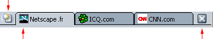
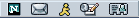

Ce document est fourni par Netscape pour information uniquement. Il peut vous aider à prendre certaines mesures destinées à protéger la confidentialité et la sécurité de vos informations personnelles sur Internet. Ce document ne couvre cependant pas tous les aspects de la confidentialité et de la sécurité en ligne, et ne constitue pas une recommandation de la part de Netscape concernant ce qui constitue une protection adéquate de la confidentialité et de la sécurité sur Internet.
Personnalisation de Netscape
Netscape s'accompagne de diverses fonctionnalités (telles que Ma barre latérale, les signets et la navigation par onglets) qui vous permettent de personnaliser le logiciel en fonction de vos besoins.
Cette section décrit les options personnalisables du composant de navigation de Nestcape, à savoir : Navigator.
Ma barre latérale
Fonction de Ma barre latérale
Ma barre latérale est une zone personnalisable de votre navigateur, permettant de conserver les éléments dont vous avez besoin en permanence (l'actualité et la météo, votre carnet d'adresses ou liste d'amis, les cours de la bourse, un calendrier) et comportant de nombreuses autres options disponibles. Ma barre latérale vous présente ces éléments dans des onglets mis à jour en permanence.
Netscape est fourni avec quelques onglets prédéfinis dans Ma barre latérale, mais vous pouvez la personnaliser en ajoutant, supprimant et réorganisant des onglets.
[ Retour au début de la section ]
Utilisation de Ma barre latérale
A moins d'avoir fermé Ma barre latérale, elle est toujours ouverte à gauche du navigateur. Pour afficher un onglet :
- Cliquez sur le titre d'un onglet ; cliquez, par exemple, sur "Recherche". L'onglet Recherche s'ouvre. Il vous permet de rechercher des pages Web.

|
Poignée de
Ma barre latérale
|
|
Si Ma barre latérale n'est pas visible, elle est peut-être fermée. Pour l'ouvrir :
- Déplacez le pointeur de la souris de haut en bas le long de la bordure gauche de la fenêtre Netscape. Le pointeur se transforme en main lorsqu'il passe au-dessus de la poignée de Ma barre latérale.
- Cliquez sur la poignée pour ouvrir Ma barre latérale.
Remarque : Si Ma barre latérale n'est pas sélectionnée dans le menu Afficher de Navigator (sous-menu Afficher/Masquer), vous ne verrez ni le cadre, ni sa poignée.
|
Astuce : Pour recharger l'onglet Ma barre latérale, cliquez sur le titre de l'onglet avec le bouton droit de la souris, puis choisissez Recharger dans le menu contextuel.
[ Retour au début de la section ]
Ajout d'onglets à Ma barre latérale
Pour ajouter un onglet :
- Cliquez sur "Onglets" en haut de Ma barre latérale et sélectionnez Personnaliser ma barre latérale dans le menu.
- Dans la fenêtre Personnaliser la barre latérale, sélectionnez un onglet de la liste de gauche. Double-cliquez sur les dossiers pour les ouvrir ou les fermer.
- Cliquez sur Ajouter.
- Ajoutez autant d'onglets que vous le souhaitez.
- Cliquez sur OK pour terminer.
Remarque : Si vous ajoutez plus de huit onglets à Ma barre latérale, Netscape masque les onglets restants afin de ne pas encombrer Ma barre latérale. Pour faire défiler les onglets masqués, cliquez sur la flèche vers le bas située au bas de Ma barre latérale jusqu'à ce que vous accédiez à l'onglet voulu. Cliquez sur la flèche vers le haut pour faire défiler la liste des onglets vers le haut.
Astuce:
- Pour prévisualiser un onglet de Ma barre latérale avant de l'ajouter, sélectionnez un onglet dans la liste située sur la gauche de la boîte de dialogue Personnaliser Ma barre latérale et cliquez sur Test. Après quelques secondes, l'onglet s'affiche dans la fenêtre Prévisualisation des onglets.
- Pour afficher une liste complète et classée des onglets disponibles pour Ma barre latérale, cliquez sur le bouton "Onglets" en haut de Ma barre latérale, puis sur contacts de la barre latérale.
Vous pouvez également activer et désactiver des onglets de Ma barre latérale.
- Cliquez sur "Onglets" en haut de Ma barre latérale. Les onglets en cours s'affichent dans la partie inférieure du menu.
- Sélectionnez les onglets à afficher dans Ma barre latérale. Supprimez la marque de sélection pour désactiver un onglet (il apparaîtra toujours dans le menu).
Astuce : Pour désactiver rapidement un onglet de Ma barre latérale, cliquez sur son nom avec le bouton droit et sélectionnez Masquer l'onglet.
[ Retour au début de la section ]
Personnalisation d'onglets de Ma barre latérale
Remarque : Tous les onglets ne peuvent pas être personnalisés.
- Cliquez sur "Onglets" en haut de Ma barre latérale et sélectionnez Personnaliser Ma barre latérale dans le menu.
- Sélectionnez un onglet disponible dans la liste de droite.
- Cliquez sur Personnaliser l'onglet si ce bouton est activé. Une fenêtre s'affiche avec des informations et des options de personnalisation de l'onglet.
Les instructions varient selon la source de l'onglet : outre Netscape, les onglets peuvent être fournis par toute société, organisation ou personne utilisant Internet.
- Après avoir respecté les instructions du fournisseur de l'onglet, fermez la fenêtre de personnalisation (ou respectez les instructions du fournisseur pour ce faire).
- Cliquez sur OK pour terminer.
[ Retour au début de la section ]
Réorganisation des onglets de Ma barre latérale
- Cliquez sur "Onglets" en haut de Ma barre latérale et sélectionnez Personnaliser Ma barre latérale dans le menu.
- Sélectionnez un onglet dans la liste de droite.
- Cliquez sur Haut et Bas pour déplacer l'onglet.
- Répétez les étapes 1 et 2 pour continuer à réorganiser les onglets.
- Cliquez sur OK pour terminer.
[ Retour au début de la section ]
Suppression d'onglets de Ma barre latérale
- Cliquez sur "Onglets" en haut de Ma barre latérale et sélectionnez Personnaliser Ma barre latérale dans le menu.
- Sélectionnez un onglet dans la liste de droite.
- Cliquez sur Supprimer.
- Supprimez autant d'onglets que vous le souhaitez.
- Cliquez sur OK pour terminer.
[ Retour au début de la section ]
Ouverture, fermeture et redimensionnement de Ma barre latérale
| Utilisez les poignées de Ma barre latérale pour l'ouvrir, la fermer et la redimensionner : |
|
Poignée de
Ma barre latérale
|
| Si Ma barre latérale est fermée, sa poignée est toujours visible. Si la poignée n'apparaît pas, ouvrez le menu Afficher, choisissez Afficher/Masquer, puis cliquez sur Ma barre latérale. Déplacez le pointeur de la souris de haut en bas le long de la bordure gauche de la fenêtre Netscape. Le pointeur se transforme en main lorsqu'il touche la "poignée" de Ma barre latérale, comme indiqué dans l'illustration.
- Cliquez sur l'icône "Ouvrir Ma barre latérale"
 dans la partie gauche de la barre d'outils personnelle. dans la partie gauche de la barre d'outils personnelle.
- Cliquez sur la poignée pour ouvrir et fermer Ma barre latérale.
- Cliquez-glissez sur la poignée pour redimensionner Ma barre latérale.
|
Pour supprimer Ma barre latérale, ainsi que la poignée, effectuez l'une des opérations suivantes :
- Cliquez sur l'icône "Fermer Ma barre latérale"
 dans la partie gauche de la barre d'outils personnelle.
dans la partie gauche de la barre d'outils personnelle.
- Cliquez sur la croix située dans l'angle supérieur droit de Ma barre latérale.
- Ouvrez le menu Afficher, choisissez Afficher/Masquer, puis désélectionnez l'option Ma barre latérale.
- Appuyez sur F9.
[ Retour au début de la section ]
Navigation par onglets
Présentation de la navigation par onglets
La fonction de navigation par onglets vous permet d'ouvrir plusieurs pages Web dans une seule fenêtre. Chaque page Web possède son propre onglet, placé dans la partie supérieure de la fenêtre unique. Tous les onglets apparaissent dans la barre d'onglets. Vous pouvez, par exemple, consulter les sites netscape.com, icq.com et cnn.com dans une seule fenêtre au lieu d'en afficher trois distinctes.
| Cliquez sur cette option pour ouvrir un nouvel onglet. |
|
|  |
| Onglet en cours d'affichage.
|
Cliquez sur cette option pour fermer l'onglet en cours d'affichage.
|
| Barre d'onglets
|
Il n'est pas nécessaire d'ouvrir plusieurs fenêtres pour visiter des pages Web différentes ; vous disposez ainsi de plus d'espace libre sur votre bureau. Vous pouvez ainsi ouvrir, fermer et recharger des pages Web en toute simplicité, sans devoir basculer vers une autre fenêtre.
[ Retour au début de la section ]
Configuration de la navigation par onglets
Il existe plusieurs manières de configurer la fonction de navigation par onglets. Vous pouvez, par exemple, modifier vos préférences afin d'ouvrir de nouveaux onglets de Navigator à partir de la barre d'adresses. Il est également possible de charger de nouveaux onglets en arrière-plan de telle sorte que la première page reste à l'avant-plan lors du téléchargement de la seconde. Pour plus d'informations sur la configuration de la navigation par onglets, consultez la rubrique Préférences de Navigator – Navigation par onglets.
[ Retour au début de la section ]
Ouverture d'onglets
Pour ouvrir un onglet de Navigator, effectuez l'une des opérations suivantes :
Ouverture d'un nouvel onglet vide :
- A partir du menu Fichier : Ouvrez le menu Fichier, choisissez Nouveau, puis cliquez sur Onglet de Navigator.
- A partir de la barre d'onglets : Si celle-ci est visible, vous pouvez cliquer sur l'icône "Nouvel onglet"
 dans la partie gauche de la barre d'onglets.
dans la partie gauche de la barre d'onglets.
- A partir d'un menu déroulant : Si la barre d'onglets est visible, cliquez sur celle-ci avec le bouton droit de la souris, puis choisissez Nouvel onglet dans le menu contextuel.
Ouverture d'un lien de page Web dans un onglet de Navigator :
- A partir d'un menu déroulant : Cliquez sur le lien d'une page Web avec le bouton droit de la souris, puis cliquez sur Ouvrir le lien dans un nouvel onglet. Pour simuler un clic droit sous Mac OS, appuyez sur Ctrl et cliquez sur le bouton de la souris.
- A partir de la barre d'adresses : Entrez l'adresse d'une page Web dans la barre d'adresses et appuyez ensuite sur Ctrl+Entrée. (Sur Mac, appuyez sur Cmd+Retour).
Remarque : Vous devez configurer les préférences de la navigation par onglets de manière à ouvrir un onglet de Navigator à partir de la barre d'adresses. Pour plus d'informations à ce sujet, consultez la rubrique Préférences de Navigator – Navigation par onglets.
Astuce:
- Pour ouvrir rapidement un onglet de Navigator vide, appuyez sur Ctrl+T.
- Pour recharger un onglet de Navigator, cliquez avec le bouton droit de la souris n'importe où sur la barre d'onglets, puis sélectionnez Recharger l'onglet dans le menu contextuel. Pour recharger tous les onglets, suivez la même procédure en cliquant, cette fois, sur l'option Recharger tous les onglets .
[ Retour au début de la section ]
Ajout de signets pour des onglets
Pour créer un signet avec le groupe d'onglets de Navigator affichés dans la fenêtre actuelle :
- Ouvrez le menu Signets et choisissez l'option "Bookmark This Group of Tabs".
- Attribuez un nom au groupe de signets dans le champ Nom.
- Choisissez parmi les options suivantes :
- Créer dans : Choisissez un dossier dans lequel créer votre groupe de signets.
- Nouveau dossier : Cliquez sur ce bouton pour créer un dossier dans lequel placer votre groupe de signets.
- Utiliser défaut : Cliquez sur ce bouton pour classer le groupe de signets dans le dossier réservé aux nouveaux signets. Pour plus d'informations sur la définition des dossiers destinés aux nouveaux onglets, consultez la rubrique Organisation des signets.
- Cliquez sur OK pour ajouter le groupe de signets.
[ Retour au début de la section ]
Fermeture d'onglets
Il existe plusieurs manières de fermer des onglets de Navigator :
Fermeture de l'onglet de Navigator en cours d'affichage :
- Ouvrez le menu Fichier et choisissez Fermer l'onglet.
- Cliquez sur le bouton "X" situé à droite de la barre d'onglets.
| Cliquez sur cette option pour ouvrir un nouvel onglet. |
|
| |
| Onglet en cours d'affichage.
|
Cliquez sur cette option pour fermer l'onglet en cours d'affichage.
|
| Barre d'onglets
|
Astuce :
- Pour fermer un onglet de Navigator, même s'il est masqué, cliquez sur celui-ci avec le bouton droit de la souris, puis cliquez sur Fermer l'onglet dans le menu contextuel.
- Pour ne garder ouvert qu'un seul onglet de Navigator, cliquez sur l'onglet en question avec le bouton droit de la souris, puis choisissez Fermer les autres onglets dans le menu contextuel.
[ Retour au début de la section ]
Changement des polices, couleurs et thèmes
Modification des polices par défaut
Normalement, les pages Web s'affichent dans la police par défaut définie par votre navigateur ou choisie par leurs auteurs.
Pour modifier les polices par défaut :
- Dans le menu Edition, choisissez Préférences.
- Dans la catégorie Aspect, choisissez Polices. Si aucune option n'est visible dans cette catégorie, double-cliquez sur Aspect pour développer la liste.
- Dans la liste déroulante "Sélectionner", choisissez un jeu de caractères. Par exemple, pour définir les polices par défaut pour le jeu de caractères occidental (roman), sélectionnez "Occidental."
- Sélectionnez si le texte proportionnel doit être de type serif (comme Times Roman) ou sans serif (comme Arial). Spécifiez la taille de police du texte proportionnel.
- Si une police appropriée est disponible pour votre jeu de caractères, sélectionnez des polices dans les catégories Serif, Sans serif, Cursive, Fantaisie et Fixe. Vous pouvez également attribuer une taille au texte fixe.
- Spécifiez si la police par défaut doit être serif ou sans serif.
- Sélectionnez une police à chasse fixe et sa taille. Certains types de texte, comme les équations et formules, s'affichent dans une police à chasse fixe.
De nombreux auteurs de pages Web sélectionnent leurs propres polices et tailles. Pour autoriser des polices autres que celles spécifiées dans vos préférences, cochez la case "Autoriser les documents à utiliser d'autres polices".
Pour régler la lisibilité des polices, sélectionnez dans la liste déroulante la résolution d'affichage des pages Web en points par pouce (dpi). Sélectionnez "Autres" pour ouvrir la boîte de dialogue Etalonner la résolution, qui permet d'étalonner la résolution en mesurant la longueur d'une ligne à l'écran. Une résolution accrue améliorera la lisibilité du texte sur certains écrans.
[ Retour au début de la section ]
Modification des couleurs par défaut
Normalement, les couleurs de fond et de texte des pages Web sont déterminées par les couleurs par défaut de votre navigateur ou par les auteurs des pages.
Pour modifier les couleurs par défaut :
- Dans le menu Edition, choisissez Préférences.
- Dans la catégorie Aspect, choisissez Couleurs. Si aucune option n'est visible dans cette catégorie, cliquez pour développer la liste.
- Cliquez sur les blocs de couleur correspondant à Texte, Arrière-plan, Liens non consultés et Liens consultés. Sélectionnez une couleur dans la palette. Vous pouvez également spécifier si les liens doivent être soulignés.
La plupart des auteurs de pages Web choisissent leurs couleurs. Vous pouvez ignorer les options des auteurs en sélectionnant "Utiliser mes propres couleurs, ignorer les couleurs fournies".
Lorsque vous affichez la source d'une page Web, vous pouvez désigner la syntaxe HTML d'une page Web par des couleurs spécifiques en cochant la case "Activer la mise en surbrillance de la syntaxe".
[ Retour au début de la section ]
Modification du thème
Vous pouvez modifier la présentation et l'aspect de Netscape en changeant de thèmes.
- Dans le menu Edition, choisissez Préférences.
- Dans la catégorie Aspect, choisissez Thèmes.
- Cliquez sur le thème à appliquer.
- Cliquez sur OK pour confirmer votre choix.
Remarque : Vous devez quitter et redémarrer Netscape après l'application d'un nouveau thème pour que la modification entre en vigueur.
Raccourci : Vous pouvez également changer de thème en ouvrant le menu Afficher, en sélectionnant Appliquer un thème et en choisissant le thème à utiliser.
[ Retour au début de la section ]
Barres d'outils
Barre d'outils de navigation
La barre d'outils de navigation, illustrée ici, permet de naviguer sur le Web.

|
| Page précédente |
Page suivante |
Recharger |
Arrêter |
[ Retour au début de la section ]
Barre d'outils personnelle
La barre d'outils personnelle est entièrement personnalisable, vous pouvez décider de son contenu. Elle contient des boutons prédéfinis, notamment votre page My Netscape, votre page d'accueil, la recherche, le shopping et Radio@Netscape.com.
Remarque : Pour obtenir de l'aide sur Radio@Netscape.com, consultez l'Aide de Radio@Netscape.com dans Netscape.
|
| Barre d'outils personnelle
|
Vous pouvez aisément ajouter, supprimer et réorganiser des éléments de la barre d'outils personnelle.
Activation et désactivation de boutons
- Dans le menu Edition, choisissez Préférences.
- Cliquez sur Navigator.
- Choisissez les boutons dont vous souhaitez disposer dans la barre d'outils dans la liste "Sélectionnez les boutons que vous souhaitez voir dans les barres d'outils".
- Cliquez sur OK.
Ajout de signets à la barre d'outils personnelle
Vous pouvez ajouter des boutons pour vos signets favoris ou des dossiers contenant des groupes de signets. Pour créer un signet à ajouter à la barre d'outils personnelle :
- Ouvrez une page Web pour laquelle créer un signet.
- Faites glisser l'icône de signet
 (située à gauche de l'URL dans la barre d'adresses) à l'emplacement désiré dans la barre d'outils personnelle. Vous pouvez faire glisser l'icône directement dans la barre d'outils personnelle ou dans l'un de ses dossiers. Pour plus d'informations sur l'ajout de dossiers de signets dans la barre d'outils personnelle, consultez la rubrique "Ajout de dossiers de signets à la barre d'outils personnelle".
(située à gauche de l'URL dans la barre d'adresses) à l'emplacement désiré dans la barre d'outils personnelle. Vous pouvez faire glisser l'icône directement dans la barre d'outils personnelle ou dans l'un de ses dossiers. Pour plus d'informations sur l'ajout de dossiers de signets dans la barre d'outils personnelle, consultez la rubrique "Ajout de dossiers de signets à la barre d'outils personnelle".
Remarque : Il est possible que l'icône de signet apparaisse sous la forme d'une autre icône de page si vous avez sélectionné l'option Afficher les icônes de site Web dans les préférences. Pour plus d'informations sur la modification de ces préférences, consultez la rubrique Préférences d'aspect – Aspect.
Chaque élément du dossier de la barre d'outils personnelle s'affiche sous la forme d'un bouton de barre d'outils. Il peut être nécessaire d'agrandir la fenêtre du navigateur pour les afficher tous.
Ajout de dossiers signets à la barre d'outils personnelle
Vous pouvez ajouter des dossiers de signets à votre barre d'outils personnelle afin de classer vos signets favoris par catégories. Vous pouvez, par exemple, créer un dossier pour les signets ayant trait à vos loisirs et un autre pour vos activités professionnelles. Pour ajouter un signet à la barre d'outils personnelle :
- Ouvrez le menu Signets et choisissez Gérer les signets.
- Sélectionnez "Personal Toolbar Folder".
- Cliquez sur Nouveau dossier dans la barre d'outils.
- Attribuez un nom au nouveau dossier de signets. Le nom par défaut est "Nouveau dossier".
- Cliquez sur OK pour confirmer le nom de votre nouveau dossier de signets.
Le nouveau dossier de signets apparaît à la fin de la barre d'outils personnelle.
Désignation d'un dossier de signets comme dossier de la barre d'outils personnelle
- Ouvrez le menu Signets et choisissez Gérer les signets.
- Sélectionnez le dossier de signets dont vous souhaitez afficher les éléments dans la barre d'outils.
- Dans le menu Afficher, sélectionnez Ajouter les barres d'outils personnelles dans ce dossier.
Les boutons de la barre d'outils personnelle correspondent désormais aux signets du dossier désigné.
Suppression de signets de la barre d'outils personnelle
- Ouvrez le menu Signets et choisissez Gérer les signets.
- Cliquez sur Dossier de barre d'outils personnelle.
- Sélectionnez le signet ou dossier à supprimer.
- Appuyez sur Suppr sur le clavier.
- Fermez la fenêtre Gérer les signets.
Astuce : Pour supprimer rapidement un signet placé dans la barre d'outils personnelle (et non dans un dossier), cliquez dessus avec le bouton droit et sélectionnez Supprimer.
Réorganisation de la barre d'outils personnelle
- Ouvrez le menu Signets et choisissez Gérer les signets.
- Dans la fenêtre Signets, cliquez sur Dossier de barre d'outils personnelle.
- Sélectionnez un signet ou dossier et faites-le glisser vers son nouvel emplacement.
- Une fois terminé, fermez la fenêtre Signets.
Remarque : Les boutons standard de la barre d'outils personnelle, tels que Rechercher et Page d'accueil, ne peuvent pas être réorganisés, mais ils peuvent être désactivés et activés.
Astuce : Pour déplacer rapidement un signet placé dans la barre d'outils personnelle, faites-le glisser vers un nouvel emplacement de la barre d'outils personnelle ou dans un dossier.
[ Retour au début de la section ]
Barre d'état
La barre d'état est située au bas de toutes les fenêtres Netscape. Elle comprend les éléments suivants :
- Barre de composants : Cette barre vous permet de basculer entre les différents composants de Nestcape. Pour plus d'informations à ce sujet, consultez la rubrique Barre de composants .
- Informations sur l'état : Affichage d'informations telles que l'URL de la page Web ou l'état de chargement d'une page.
- Icône de notification de cookie
 : Cette icône s'affiche lorsqu'un site Web a utilisé un cookie d'une manière telle que vous devez en être informé. Pour plus d'informations à ce sujet, consultez la rubrique Notification des cookies.
: Cette icône s'affiche lorsqu'un site Web a utilisé un cookie d'une manière telle que vous devez en être informé. Pour plus d'informations à ce sujet, consultez la rubrique Notification des cookies.
- Icône Hors ligne
 ou En ligne
ou En ligne  : Cliquez sur cette icône pour basculer entre les modes en ligne et hors ligne. Lorsque vous travaillez hors ligne, vous empêchez Netscape de se connecter à Internet, par exemple, pour charger des images figurant sur des pages Web ou vérifier automatiquement votre boîte aux lettres.
: Cliquez sur cette icône pour basculer entre les modes en ligne et hors ligne. Lorsque vous travaillez hors ligne, vous empêchez Netscape de se connecter à Internet, par exemple, pour charger des images figurant sur des pages Web ou vérifier automatiquement votre boîte aux lettres.
- Icône Cadenas (Exemple :
 ) : Cette icône vous indique si tout le contenu de la page Web a été chiffré lors de sa réception par votre ordinateur. Pour plus d'informations à ce sujet, consultez la rubrique Vérification de la sécurité d'une page Web.
) : Cette icône vous indique si tout le contenu de la page Web a été chiffré lors de sa réception par votre ordinateur. Pour plus d'informations à ce sujet, consultez la rubrique Vérification de la sécurité d'une page Web.
[ Retour au début de la section ]
Barre de composants
Utilisez la barre de composants située au bas de la fenêtre Netscape pour passer d'une tâche à l'autre (par exemple : navigation, messagerie et Instant Messenger).

[ Retour au début de la section ]
Masquage d'une barre d'outils
Il existe deux manières de masquer les barres d'outils.
Pour réduire une barre d'outils :
- Cliquez sur le petit triangle à gauche de la barre d'outils. Pour la réafficher, cliquez de nouveau sur le triangle. (Remarque : Vous ne pouvez pas masquer la barre de composants en utilisant cette méthode.)
Pour masquer totalement une barre d'outils, ainsi que son triangle :
- Ouvrez le menu Afficher.
- Sélectionnez Afficher/Masquer et désélectionnez les barres d'outils à masquer.
Pour annuler cette action, ouvrez le menu Afficher, sélectionnez Afficher/Masquer puis sélectionnez les barres d'outils à afficher.
[ Retour au début de la section ]
Signets
Fonction des signets
Les signets sont des raccourcis vers vos pages Web favorites. Plutôt que de taper de longues URL (adresses Web), vous pouvez créer des signets vous amenant directement aux pages de votre choix.
L'accès aux signets s'effectue par le menu Signets, l'onglet Signets de Ma barre latérale et la fenêtre Gérer les signets. Il est possible de contrôler le contenu du menu Signets en ajoutant des signets pour vos pages Web favorites et en réorganisant votre liste de signets.
Utilisation des signets
Netscape comprend des signets prédéfinis. Pour utiliser un signet :
- Ouvrez le menu Signets.
- Sélectionnez un signet dans la liste ou dans l'un des dossiers de la liste.
[ Retour au début de la section ]
Création de signets
Vous pouvez créer des signets pour vos sites Web favoris afin de pouvoir y retourner plus facilement.
Pour créer un signet pour la page en cours, procédez comme suit :
- Pour ajouter un signet au menu Signets, ouvrez ce dernier et choisissez Ajouter aux signets.
- Pour ajouter un signet dans un dossier spécifique du menu Signets ou pour indiquer un nom ou une URL spécifique pour votre signet :
- Ouvrez le menu Signets et choisissez Classer un signet. Choisissez parmi les options suivantes :
- Nom : Tapez un nom pour le signet si vous souhaitez un nom différent.
- Adresse : Tapez une URL pour le signet si vous souhaitez une URL différente.
- Créer dans : Choisissez un dossier dans lequel créer votre signet.
- Nouveau dossier : Cliquez sur ce bouton pour créer un nouveau dossier dans lequel placer votre signet.
- Utiliser défaut : Cliquez sur ce bouton pour classer le signet dans le dossier désigné pour les nouveaux signets.
- Cliquez sur OK pour ajouter le signet.
Astuce : Si plusieurs onglets de Navigator sont ouverts dans une fenêtre, vous pouvez sélectionner l'option "Bookmark this group of tabs" afin d'ajouter un onglet collectif qui ouvrira tous les onglets affichés dans la fenêtre actuelle.
- Pour ajouter un signet à la barre d'outils personnelle, faites glisser l'icône du signet à côté de la barre d'adresses vers un emplacement sur la barre d'outils personnelle. Vous pouvez déplacer un onglet dans les emplacements suivants :
- Dans le dossier Signets de la barre d'outils personnelle.
- Dans un dossier de signets que vous avez créé dans la barre d'outils personnelle.
- Dans la barre d'outils personnelle proprement dite, à droite de tous les dossiers de signets.
Pour plus d'informations sur l'ajout de signets à la barre d'outils personnelle, consultez la rubrique "Ajout de signets à la barre d'outils personnelle".
|
| Barre d'outils personnelle
|
- Pour ajouter un signet à l'onglet Signets de Ma barre latérale, ouvrez cette dernière, sélectionnez l'onglet Signets et faites glisser l'icône de signet à côté de la barre d'adresses vers un emplacement de la liste de l'onglet Signets.
Remarques :
- Il est possible que l'icône de signet apparaisse sous la forme d'une autre icône de page si vous avez sélectionné l'option Afficher les icônes de site Web dans les préférences. Pour plus d'informations sur la modification de ces préférences, consultez la rubrique Préférences d'aspect – Aspect.
- Après l'ajout d'un signet à l'aide d'une des méthodes énoncées ci-dessus, il est accessible par l'onglet Signets de Ma barre latérale, la fenêtre Gérer les signets et le menu Signets.
[ Retour au début de la section ]
Organisation des signets
Pour organiser les signets, ouvrez le menu Signets et choisissez Gérer les signets. Effectuez l'une des tâches suivantes dans la fenêtre Gérer les signets.
Astuce : Vous pouvez ouvrir cette fenêtre depuis l'onglet Signets de Ma barre latérale. Cliquez sur Gérer en haut de l'onglet Signets.
Pour afficher les signets contenus dans des dossiers :
- Double-cliquez sur un dossier pour en afficher le contenu.
Pour déplacer un signet ou un dossier dans la liste :
- Faites glisser le signet ou dossier à déplacer vers son nouvel emplacement. Pour placer un signet dans un dossier, faites-le glisser.
Pour créer un dossier ou séparateur :
- Cliquez sur Nouveau dossier ou Nouveau séparateur dans la partie supérieure de la fenêtre Signets. Le nouveau dossier ou séparateur apparaît sous la sélection en cours.
Pour supprimer un signet ou un dossier de la liste :
- Sélectionnez le signet ou le dossier à supprimer.
- Appuyez sur la touche Suppr du clavier ou cliquez sur Supprimer dans la fenêtre Signets.
Pour trier vos signets dans la fenêtre de gestion des signets :
- Ouvrez le menu Afficher et sélectionnez la méthode de tri (comme Trier par nom ou Trier par adresse).
Astuce : Pour ajouter des colonnes, ouvrez le menu Afficher, sélectionnez "Afficher les colonnes", puis cliquez sur un en-tête de colonne dans la liste.
Désignation d'un nouveau dossier de signets
Lorsque vous créez un signet, Netscape l'ajoute normalement au bas de la liste des signets. Si vous préférez placer les signets dans un dossier, vous pouvez désigner un nouveau dossier de signets.
- Ouvrez le menu Signets et choisissez Gérer les signets.
- Dans la fenêtre Signets, sélectionnez un dossier dans lequel placer les nouveaux signets.
- Ouvrez le menu Afficher et sélectionnez Ajouter les nouveaux signets dans ce dossier.
[ Retour au début de la section ]
Modification de signets
Vous pouvez modifier les informations de tous les signets.
- Ouvrez le menu Signets et choisissez Gérer les signets.
- Dans la fenêtre Signets, cliquez sur un signet.
- Cliquez sur Propriétés.
- Dans la fenêtre Propriétés du signet, cliquez sur l'onglet Informations.
Vous pouvez renommer le signet (le nom s'affiche dans la liste des signets), ajouter des informations descriptives ou définir un mot-clé. Le mot-clé d'un signet peut être entré dans la barre d'adresses pour passer au site correspondant.
Vous pouvez également configurer Netscape de façon à réactualiser les sites Web pour lesquels un signet est défini.
- Ouvrez le menu Signets et choisissez Gérer les signets.
- Dans la fenêtre Signets, cliquez sur un signet.
- Cliquez sur Propriétés.
- Dans la fenêtre Propriétés du signet, cliquez sur l'onglet Planifier.
- Utilisez les listes déroulantes pour spécifier la fréquence de recherche de mises à jour de page marquée par Netscape.
- Pour être informé de la mise à jour d'une page référencée, cliquez sur l'onglet Notifier et sélectionnez une option de notification.
[ Retour au début de la section ]
Recherche dans les signets
Pour rechercher dans la liste des signets :
- Ouvrez le menu Signets et choisissez Gérer les signets.
- Dans la fenêtre Signets, ouvrez le menu Outils et sélectionnez Rechercher des signets. La boîte de dialogue Rechercher les signets s'affiche.
- Dans les listes déroulantes, sélectionnez les options de définition de la recherche et cliquez sur Rechercher. Les signets correspondant aux critères de recherche s'affichent. Choisissez parmi les options de recherche suivantes :
- Sélectionnez "contient", "commence par" ou "finit par" si vous ne connaissez qu'une partie du mot ou de la phrase recherchée.
- Sélectionnez "est" si vous savez exactement ce que vous recherchez.
- Sélectionnez "n'est pas" ou "ne contient pas" pour exclure des pages.
- Cliquez dans la zone de saisie et entrez l'URL (adresse Web) ou le nom, partiel ou complet, des signets ou historiques à rechercher ou exclure.
- Cochez la case "Enregistrer la requête dans les signets" pour enregistrer cette recherche en vue d'une utilisation ultérieure.
- Double-cliquez sur un signet de la liste pour accéder à cette page.
Astuce : Si la liste est difficile à lire, essayez d'agrandir la fenêtre des résultats de recherche.
[ Retour au début de la section ]
Exportation ou importation d'une liste de signets
Vos signets sont stockés dans le fichier bookmarks.html. Vous pouvez exporter une copie de ce fichier et l'enregistrer dans un dossier de votre choix. Vous pouvez ensuite le modifier et le traiter comme n'importe quel fichier HTML.
- Ouvrez le menu Signets et choisissez Gérer les signets.
- Dans la fenêtre Signets, ouvrez le menu Outils et choisissez Exporter.
- Dans la boîte de dialogue "Exporter fichier de signets", choisissez un dossier. Le fichier bookmarks.html sera copié dans le dossier de votre choix.
- Cliquez sur Enregistrer.
Vos signets Netscape ne sont pas altérés par cette procédure.
Vous pouvez également importer des fichiers de signets à partir d'autres sources. Par exemple, il est possible d'importer des fichiers de signets à partir de versions antérieures de Netscape, d'autres navigateurs ou de fichiers de signets envoyés par vos amis.
Avant de commencer, assurez-vous que le fichier de signets à importer est au format HTML.
- Ouvrez le menu Signets et choisissez Gérer les signets.
- Dans la fenêtre Signets, ouvrez le menu Outils et choisissez Importer.
- Dans la boîte de dialogue "Importer fichier de signets", recherchez et sélectionnez le fichier de signets à importer.
- Cliquez sur Enregistrer.
Le fichier de signets importé est traité comme un groupe de nouveaux signets et ajouté au bas de la liste des signets. Si vous avez désigné un nouveau dossier de signets, les signets importés y sont placés.
Remarque : L'importation d'un fichier de signets entraîne l'importation des signets et des dossiers qu'il contient. Elle ne crée pas deux fichiers de signets.
[ Retour au début de la section ]
Spécification du mode de démarrage de Netscape
Spécification d'une page d'accueil
Il est possible de préciser la page qui doit se charger au démarrage du navigateur.
- Dans le menu Edition, choisissez Préférences.
- Dans "Navigator démarre avec", indiquez si vous souhaitez l'affichage automatique d'une page vierge, de la page d'accueil ou de la dernière page consultée au démarrage du navigateur.
Remarque : Si vous avez sélectionné Page d'accueil, entrez l'URL dans le champ Adresse.
[ Retour au début de la section ]
Modification de votre page d'accueil
La page d'accueil est la page qui s'ouvre lorsque vous cliquez sur le bouton Page d'accueil de la barre d'outils personnelle. Selon les préférences définies, il peut également s'agir de la page s'ouvrant automatiquement au démarrage de Netscape.
Pour spécifier la page d'accueil :
- Dans le menu Edition, choisissez Préférences.
- Cliquez sur la catégorie Navigator.
- Dans la section Page d'accueil, effectuez l'une des opérations suivantes :
- Entrez l'URL (adresse Web) de votre page d'accueil dans la zone Adresse.
- Cliquez sur Utiliser la page courante pour utiliser la page affichée dans la fenêtre du navigateur comme page d'accueil.
- Cliquez sur Choisir le fichier pour sélectionner un fichier sur votre disque dur.
Astuce : Pour spécifier rapidement votre page d'accueil, faites glisser l'icône de signet de la barre d'adresses vers le bouton Page d'accueil de la barre d'outils personnelle.
[ Retour au début de la section ]
Spécification des composants à ouvrir au lancement
Vous pouvez choisir les composants à ouvrir (Messagerie & Forum, Composer, etc.) au démarrage de Netscape :
- Dans le menu Edition, choisissez Préférences.
- Cliquez sur la catégorie Aspect.
- Sélectionnez les composants à ouvrir automatiquement à chaque démarrage de Netscape.
[ Retour au début de la section ]
19 juin 2002
Copyright © 1994-2002 Netscape Communications Corporation.